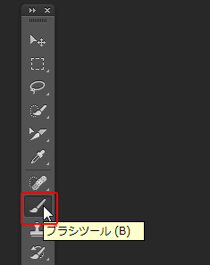

本項では、色を数値で指定するカラーパネルについて学習します。
[カラーパネル]には、現在の描画色および背景色の「カラー値」が表示されます。
「HSB」、「RGB」、「CMYK」など、それぞれのカラーモデルで編集することができます。
素材フォルダ「PS03」から、素材ファイル3_1_2.psdを開きましょう。
メニューバーの[ウィンドウ]-[カラー]を選択し[カラーパネル]を表示します。
[カラーパネル]の右上のパネルメニューから、他のカラーモデルを選択できます。
今回は「RGBスライダー」を選択します。
「R（赤）」や「G（緑）」、「B（青）」の各スライダーを左右に動かして、
各色を混ぜ合わせることで色を作成することができます。
また、スライダー隣のボックスに「カラー値」を入力して指定することもできます
パネル下部にある、[カラーランプ]に表示されている
[カラースペクトル]から色を指定することもできます。
色を自由に指定し、[ツールパネル]の[ブラシツール]を選択します。

[コントロールパネル]で、ブラシの形や大きさを変更することができます。
[ブラシツール]については次の項で説明します。
見本と同じようなカラーを作成し、実際にブラシで塗りましょう。
練習ですので見本と全く同じ色でなくてかまいません。近い色を作成して塗りましょう。
また円からはみ出してもかまいません。
以上でこの項の学習は終了です。
ファイルは閉じて次の項へ進んでください。